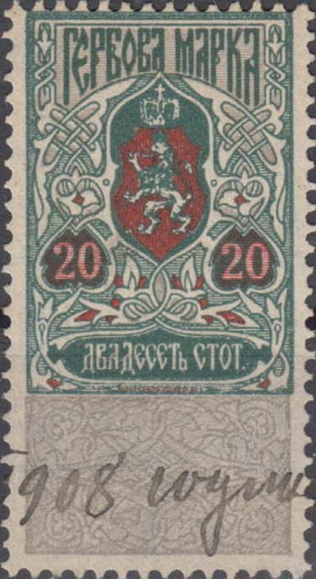
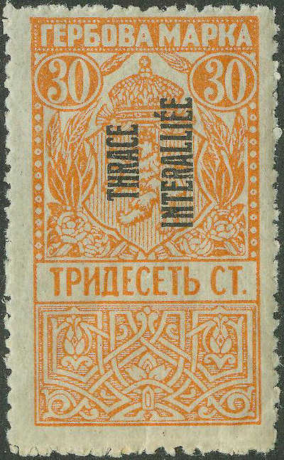
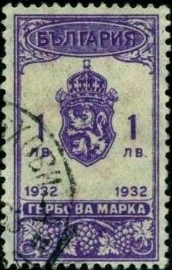

{kind=link}


Return To Catalogue - Bulgaria - Bulgaria fiscal stamps, part 1
Note: on my website many of the
pictures can not be seen! They are of course present in the
catalogue;
contact me if you want to purchase it.
Bulgaria fiscal stamps, part 1
In this design were issued: 5 s, 10 s, 20 s, 30 s and 50 s (all in green, red and grey). Also 1 L, 3 L, 5 L and 10 L (all in red, green and orange).


In this design were issued: 5 s, 10 s, 20 s, 30 s and 50 s (all in green and red) and 1 L, 3 L and 5 L (all in red and blue). I've also seen 5 s violet and green, 10 s violet and green, 20 s violet and green, 30 s violet and green, 50 s violet and green, 1 L blue and red, 3 L blue and yellow. Also an overprint: "1 LB. 50 CT." on 50 s violet and green.


Issue from 1919
In this 1919 design I have seen: 5 s green, 10 s brown, 20 s blue, 30 s orange, 50 s red, 1 L violet, 3 L brown, 5 L olive and 100 L violet and red. In 1920 these stamps were reissued in different colors.: 5 s blue, 10 s blue, 20 s blue (different "20" and "CTOT" instead of "CT"), 50 s blue.

With overprint "THRACE INTERALLIEE" for Thrace. I've also seen the value 1 L
violet.

1 L orange, I've also seen 10 L orange.

In this 1922/23 design I have seen 30 s orange, 1 L lilac, 1.50 L blue, 5 L olive, 10 L black, "15 CT." on 30 s orange.

1924 issue, larger lion, I have seen 1 L lilac and 3 L brown.
In this 1925 design, I have seen: 1 L blue and grey, 2 L red and green, 3 L blue and red, 5 L red and green, 10 L green and red, 20 L brown and yellow.
I've seen 1 L, 2 L, 3 L, 5 L, 10 L (all in red and orange), 20 L
green and yellow.

Inscription "1932"; I have seen 1 L, 2 L, 3 L, 5 L, 10
L (all in lilac); 20 L, 100 L (all in red)

Red with very faint grey lion in the center; I have seen 1 L, 3
L, 5 L, 10 L. Also a 20 L green and a 100 L green. Also 1 Lev and
"1937" on 3 L (see image above)
Inscription "1938" twice at the bottom. I have seen 1 L
violet, 3 L violet, 5 L violet, 10 L violet, 20 L brown, 50 L
brown, 100 L brown.

Inscripton "1940" twice at the bottom; I have seen 1 L,
3 L, 5 L, 10 L (all in green and orange). Also 20 L, 50 L, 100 L
(all in orange with grey background)

I have seen 1 L, 3 L, 5 L, 10 L, 20 L, 100 L (all in lilac and
grey color)

Different design 500 L blue and orange
Inscription "1945"; In this design I have seen 1 L, 3
L, 5 L, 10 L (all in green and orange), 20 L, 50 L, 100 L (all in
brown and orange).

In tis design I've seen 500 L brown and orange and 1000 L blue
and orange
{kind=link}
{kind=link}